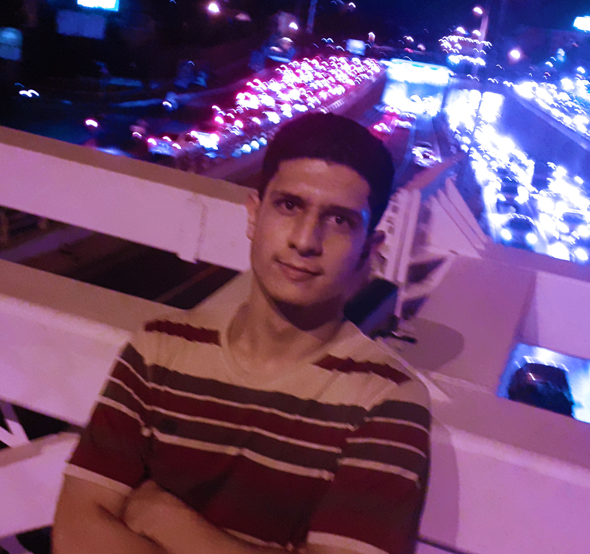

Introduction
|  |
I am Amir Kooshky, 18 years old, residing in Tehran, Iran. I am an undergraduate CE student at SUT. I have received a diploma in Maths from Energy Atomi Highschool. I also have a gold medal in the Iranian national Chemistry Olympiad. This website was prepared as an assignment for a course I am taking at the moment. My interests constitute the most cliche list in history: reading, exercising, and watching TV shows (The Sopranos is a bit of an obsession at the moment). |